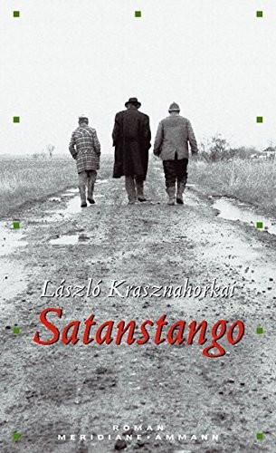
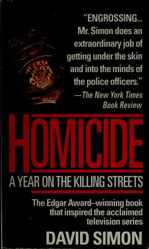
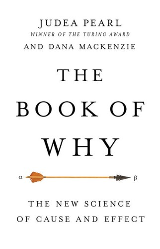
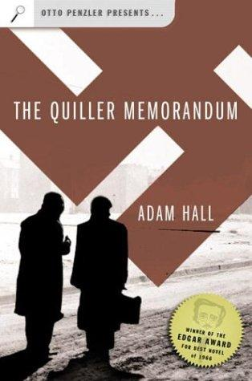
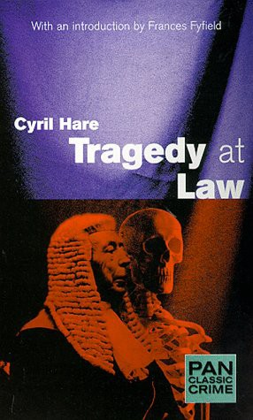

weekly digest
Week 2026-36
Recommendations for the week of 31 August 2026.
Three distinct growth edges this week. The translated non-Western literary shelf reaches Hungary for the first time — an apocalyptic, tango-structured novel of manipulation and entropy written in vast unbroken sentences. The forensic true-crime edge returns with a year embedded inside a Baltimore homicide unit, ideas-first about how detectives actually reason from fragments and how often the reasoning fails. And the epistemology-of-uncertainty thread pushes past the Bayesian frame from the inside, into the new science of causation. The comfort picks stay in the well-loved veins but reach for fresh authors: a propulsive war-game SF classic with a famous twist, a lean and claustrophobic Cold-War Berlin thriller, and a legal-world Golden-Age mystery whose puzzle turns on a fine point of law.
Highbrow



Lowbrow


